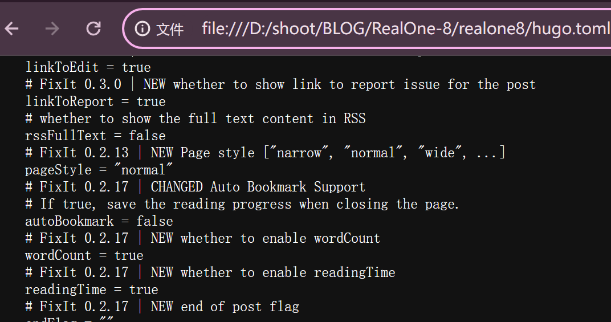
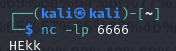
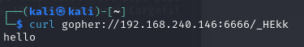
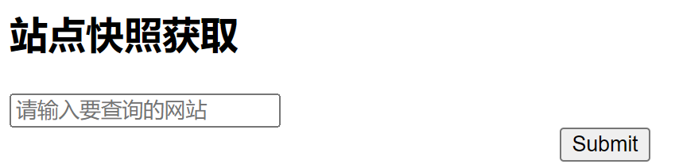
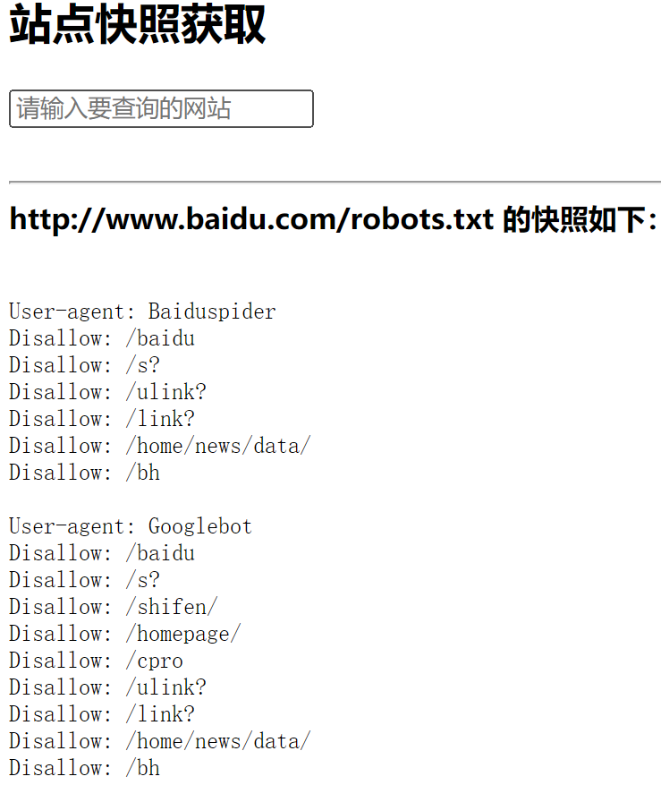
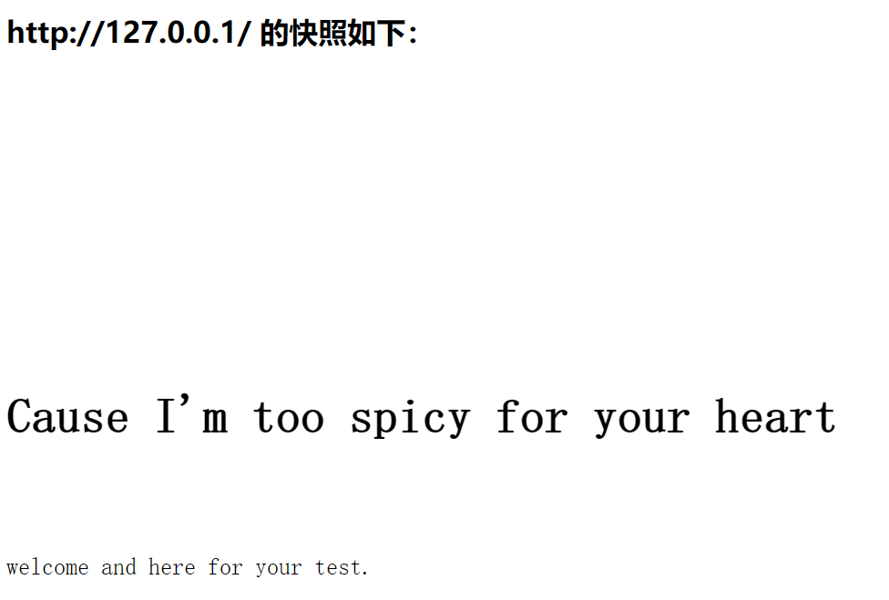
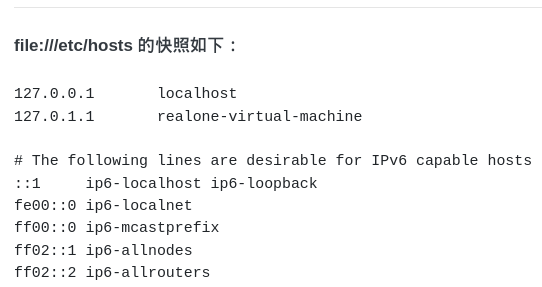
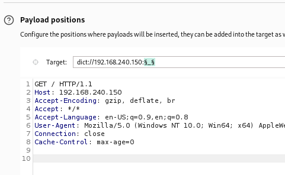

SSRF整理
AKASSRF再学习
SSRF是什么
条件
- 服务器提供从其他地方请求获取数据的功能，比如“获取快照”，“网页翻译”
- 未对目标地址进行适当过滤与限制，换句话说，就是，有漏洞可以利用
利用目的
换言之，用SSRF可以搞什么
2.指纹、端口扫描
3.攻击内网WEB应用——通过发送构造的数据包
常见形式
SSRF出没请注意
在上面的定义就提到了一些
- 通过URL翻译整个网页的服务
- 通过URL下载资源（图片，视频）的服务
- 能够对外发起网络请求的地方
利用的协议
大致可以分为以下几种：
2.gopher协议
3.dict协议
4.HTTP协议
5.DNS协议
然后来逐个解释一下利用点和利用结果
FILE
file:///path/to/file
其实并不陌生，当打开一个本地的文件的时候，浏览器搜索框就是使用这个协议，belike：

只不过大多数时候会自动省去这个file:///。
这个协议基本用于读取本地文件
gopher协议
Gopher是Internet上一个非常有名的信息查找系统，它将Internet上的文件组织成某种索引，很方便地将用户从Internet的一处带到另一处。
gopher://host:port/path/data-flow一点例子：
在一端监听6666端口，另一端通过curl+gopher发送数据信息


(无视那个hello，多打的。)
GET请求：
|
|
通过URL编码 + 最后补 %0d%0a(表示结束) 进行gopher协议数据格式化
通过gopher进行传输就是
|
|
举一个例子

截取了抓取的数据包的前两行，通过URL-encode得到结果，然后往前添加_，往后添加%0d%0a，用curl传输，结果如左边。
换行符URL编码%0A
POST请求
一个道理，不再赘述
|
|
转换之后：
|
|
利用点
2.攻击Redis
FastGCI协议
screaming queen
- record：Fastcgi协议由多个 record 组成，
- record也有 header和body 一说，
- 服务器中间件将这二者按照 fastcgi 的规则封装好发送给语言后端，
- 语言后端解码以后拿到具体数据，进行指定操作，并将结果再按照该协议封装好后返回给服务器中间件。
- type：
- 因为fastcgi一个record的大小是有限的，作用也是单一的，所以我们需要在一个TCP流里传输多个record。通过
type来标志每个record的作用，用requestId作为同一次请求的id。 - 具体请参看链接，有七个，字太多，不想做无情打字机
- 因为fastcgi一个record的大小是有限的，作用也是单一的，所以我们需要在一个TCP流里传输多个record。通过
- PHP-FPM：一个协议解析器
- 后端服务器按照FastGCI协议打包请求
- packed请求通过_TCP_发送给FPM
情景再现：(AKA真实数据包一览进行理解)
- 用户访问
http://127.0.0.1/index.php?a=1&b=2 - web目录是
/var/www/html/
那么根据FastGCI协议进行打包的协议belike：
|
|
一个重点：
- 上面这个数组其实就是PHP中
$_SERVER数组的一部分，也就是PHP里的环境变量。 - 但环境变量的作用不仅是填充
$_SERVER数组，也是告诉fpm：“我要执行哪个PHP文件”。
（所以在上面出现过的$_SERVER[] 是一个数组，不过那是遵循HTTP协议的。）
- 最后 FPM得到数据包之后，进行解析，按照解析出来的变量值进行访问指定文件。
其中的漏洞
当访问http://127.0.0.1/favicon.ico/.php 的时候，按照FastGCI协议得到部分数据包如下：
|
|
'SCRIPT_FILENAME': '/var/www/html/favicon.ico/.php'指定的文件肯定是一个不存在的文件- 而PHP的
fix_pathinfo会让FPM判断文件是否存在，不存在就去掉最后一个/及其后面的所有内容。这里就是去掉了/.php，再判断留下了的是否存在，不存在就接着继续丢弃，直到存在为止。 - PHP存在一个漏洞，将
'/var/www/html/favicon.ico/.php'当作php文件进行解析，即使这个.php被丢弃了。所以留下来的'/var/www/html/favicon.ico被当作php解析执行。
对于此有一个安全防护措施：
- 在服务器（Nginx）使用
fast_split_info将 path info去除，使用tryfiles判断文件是否存在。 - 借助PHP-FPM的security.limit_extensions配置项，避免其他后缀文件被解析。（现在大多数都默认开启，只允许.php后缀被解析）
由于第二条的限制，就算让FPM执行，也只能执行服务器上自带的php文件，并不能做到想要的执行任意文件（代码）。
但又因为
auto_prepend_file：指定在主文件之前自动解析的文件名。included 该文件像是用 require 函数调用的一样，因此使用了 include_path。特殊值none禁用 auto-prepending。auto_append_file：指定在主文件之后自动解析的文件名。included 该文件像是用 require 函数调用的一样，因此使用了 include_path。特殊值none禁用auto-prepending。
让FPM惨遭背刺：
- 设置
auto_prepend_file的参数值为php://input，意味着，该php文件要包含请求内容（一般为POST），而这样，当恶意代码放置到body中的时候，就会被执行。- 当然，还需要开启远程文件包含选项
allow_url_include）
- 当然，还需要开启远程文件包含选项
auto_append_file的利用应该一样…（后面实验一下）
攻击Redis
看起来主要用到diict和gopher
RESP协议
Redis服务器通过RESP协议和客户端通信。
一个支持多种数据类型的序列化协议：简单字符串（Simple Strings）,错误（ Errors）,整型（ Integers）, 大容量字符串（Bulk Strings）和数组（Arrays）。
用法：
-
客户端 以_Bulk Strings RESP数组_的方式发送命令给 服务器端。
-
服务器端 根据命令的具体实现，返回某一种_RESP数据类型_。
-
RESP的数据类型依赖于首字节：
-
类型
- 单行字符串（Simple Strings）： 响应的首字节是 “
+” - 错误（Errors）： 响应的首字节是 “
-” - 整型（Integers）： 响应的首字节是 “
:” - 多行字符串（Bulk Strings）： 响应的首字节是"
\\$" - 数组（Arrays）： 响应的首字节是
*
- 单行字符串（Simple Strings）： 响应的首字节是 “
-
-
RESP协议的不同部分总是以 “
\\r\\n” (CRLF) 结束。
Bulk Strings 数组
格式：
*为首字符- 表示数组中元素个数的十进制数
- CRLF结尾
- 外加数组中每个RESP类型的元素（这句话在讲个什么？）
举例：
- 空数组： *0\r\n
- 两个RESP多行字符串“foo”和“bar”元素的 数组：
*2\\r\\n$3\\r\\nfoo\\r\\n$3\\r\\nbar\\r\\n - 混合多类型多行数组：其包含的是5个元素，前四个都是数字1, 2, 3, 4，最后一个是字符串foobar，如下面的例子：
|
|
当 Redis 返回一个空数组的时候，Redis客户端库API应该返回一个空对象而不是返回一个空数组。这对区分空列表和其它不同情况（像 BLPOP 命令超时情况）是必要的。
- BLPOP命令：移出并获取列表的第一个元素， 如果列表没有元素会阻塞列表直到等待超时或发现可弹出元素为止。它是 LPOP 的阻塞版本。
- 当给定多个 key 参数时，按参数 key 的先后顺序依次检查各个列表，弹出第一个非空列表的头元素。
- LPOP命令：用于删除并返回存储在
key中的列表的第一个元素。
发送命令到服务器
- 客户端发送包含只有多行字符串的数组给Redis服务器
- Redis服务器给客户端发送任意有效的RESP数据类型作为响应
belike：C=客户端；S=服务器端
|
|
到这里大概了解了Redis的数据交互
Redis常用命令
- 启动Redis：
redis-server [--port 6379] - 连接服务器：
redis-cli -h 127.0.0.1 -p 6379 -a "mypass" - 停止redis：
redis-cli shutdown或者kill redis-pid - 给Redis发送命令有两种方式：
- redis-cli带参数运行，如：
|
|
redis config get dir #检查当前保存路径
config get dbfilename #检查保存文件名
config set dir /root/.ssh/ #设置保存路径
config set dbfilename authorized_keys #设置保存文件名
set xz “\\n\\n\\n 公钥 \\n\\n\\n” #将公钥写入xz健
save #进行保存
Redis + gopher
gopher是SSRF的万金油，不过听起来现在是一个被重点监视对象了。
webshell
|
|
然后结合gopher协议，写一个script来生成webshell
|
|
不过看PayloadsAllTheThings里面的SSRF篇提到的SSRF explloiting Redis提到gopher（写入反向shell版本）：
|
|
看起来是批次写入，仔细看会发现是相同的模板。
其所展示的dict攻击redis模板也差不多：
|
|
但dict好像常用于探测端口。
ssh public key
关于为什么有这么个利用方式，或许还记得github的ssh以及在玩hack the box的时候看过的一个ssh连接。
条件：
1、Redis服务使用ROOT账号启动
2、服务器开放了SSH服务，而且允许使用密钥登录，即可远程写入一个公钥，直接登录远程服务器。
- 如果存在
.ssh目录——直接写入~/.ssh/authorized_keys：authorized_keys是 SSH 的一个文件，存储了被允许通过公钥认证登录到服务器的公钥。 - 如果不存在——利用
crontab创建目录
|
|
也可以通过gopher或者dict将生成的payload写入。
写入之后，使用ssh username@hostname来进行连接。
关于SSH公钥和密钥的生成方法：
LINUX（UNIX、MACOS）
|
|
后面就是输入文件所在地，回车就默认~/.ssh/id_rsa ，windows就去user里面找。
再后面就是密码，回车默认无。
id_rsa：私钥文件id_rsa.pub：公钥文件
另外一种，通过python
|
|
把生成的SSH公钥通过script进行发送
不过kali应该有相关工具，找找去，贴上来。
Redis + contrab
AKA 利用contrab计划任务反弹shell
参考这个
Linux命令 之 contrab - CopyLeft - 博客园
contrab（谁知道到底是con还是cron？）
一个执行定时任务的命令，在linux上
|
|
|
|
大概就是这样的一个命令
只能在CentOS上使用，Ubuntu不行
-
理由
redis默认文件写入权限为644，但ubuntu要求执行定时任务的文件权限是600，CentOS的644也可以。redis在Ubuntu上RDB会报错——存在乱码
Redis 持久化机制
Redis 提供两种主要的持久化机制：
- RDB (Redis Database File)：定期将内存中的数据快照保存到磁盘。它是通过 fork 一个子进程来保存快照（snapshot），并将快照数据保存为二进制文件。
- AOF (Append Only File)：记录每个写操作，以追加的方式保存到文件。AOF 文件可以在 Redis 重启时重新播放这些操作，以恢复数据。
以及 Centos的定时任务文件在`/var/spool/cron/`
攻击命令（写入反向shell）：
|
|
也是通过 下面那个exp 修改版本加载得到gopher或者dict的payload，再用curl写入
DICT协议
SSRF 常配合 DICT 协议探测内网端口开放情况 词典网络协议，在RFC 2009中进行描述。它的目标是超越Webster protocol，并允许客户端在使用过程中访问更多字典。Dict服务器和客户机使用TCP端口2628。
dict://<user>;<auth>@<host>:<port>/d:<word>:<database>:<n>
ssrf.php?url=dict://attacker:11111/**举例时间：** 端口范围：8000-9000
**dict协议**进行扫描端口 
- 如果服务端不支持gopher协议，可尝试dict协议
- 不过通过dict协议的话要一条一条的执行，而gopher协议执行一条命令就行了。
- curl扩展也支持dict协议，可以配合curl命令发送请求，但也可以直接在浏览器上或者bp发包请求。
DNS
关于DNS是什么，就简单理解为，是一个存储ip和域名键值对的存储器，同时还能进行键值对对应解析。
在这里主要是用到了 DNS解析与TTL的利用，进行DNS重绑定，将有恶意代码的请求送出。
理解DNS解析与TTL的关系
DNS解析与TTL的基础知识：
- DNS解析过程：
- 用户请求域名（例如**
example.com**）。 - 浏览器或操作系统检查本地缓存（包含上次解析的结果）。
- 如果缓存中没有有效记录，请求发送到DNS解析器（通常由ISP或配置的DNS服务器提供）。
- DNS解析器递归查询根域名服务器、顶级域名服务器（TLD）和权威DNS服务器，最终返回IP地址。
- 用户请求域名（例如**
- TTL（Time-To-Live）：
- TTL值决定DNS记录在缓存中的有效期。
- 当TTL过期后，缓存中的记录被移除，必须重新解析域名。
DNS重绑定攻击的基本原理
DNS重绑定攻击通常包括以下步骤：
- 攻击者控制一个域名和DNS服务器：攻击者注册一个域名，并控制该域名的DNS服务器。
- 首次解析指向攻击者服务器：当受害者（或服务器）首次解析该域名时，DNS服务器返回一个IP地址，通常是攻击者控制的服务器的IP。
- 短TTL（生存时间）：DNS服务器为该记录设置一个非常短的TTL（生存时间），迫使客户端在短时间内再次进行DNS解析。
- 再次解析指向内部IP：当TTL过期后，受害者再次解析该域名时，DNS服务器返回一个不同的IP地址，这次是内部网络中的IP地址。
- 利用同源策略漏洞：如果受害者的客户端是一个Web浏览器，由于同源策略的限制，它认为访问的同一个域名（尽管IP地址不同）仍然是同源的，允许进行数据交换。对于服务端应用，例如SSRF，可能不会有同源策略的限制，但IP地址检查可能被绕过。
重新解析后的IP地址变化
为什么重新解析会得到不同的IP地址：
- 短TTL和动态变化：
- 短TTL设置允许域名的IP地址频繁变化。
- 攻击者可以利用短TTL进行DNS重绑定攻击，第一次解析返回合法IP，随后解析返回内部或目标IP。
- 负载均衡：
- 使用DNS轮询或负载均衡技术的域名，解析返回多个IP地址中的一个。 ：递归查询简单理解就是，一步一步往上，不同层作为请求方向上请求查询，最后返回。
- 每次解析可能返回不同的IP地址，以分散流量和提高可靠性。
- CDN和地理位置：
- 内容分发网络（CDN）根据用户地理位置返回最近的服务器IP地址。
- 不同用户或同一用户在不同时间解析可能得到不同IP地址。
绕过
### localhost
https:127.0.0.1 = http://127.0.0.1，localhost同理- IPv6/IPv4 地址嵌套（Address Embedding）：一种在 IPv6 网络中使用 IPv4 地址的方法。
- 十进制或者十六进制
http://[::]:80/ = http://127.0.0.1:80/
@
- URL Bypass：@；涉及URL解析
-
原因
URL解析规则
在解析URL时,@符号之前的部分被解析为用户信息(credentials),@之后的部分才是真正的主机地址。所以当解析
http://www.baidu.com@10.10.10.10/时:
www.baidu.com被视为用户信息10.10.10.10被视为主机地址
因此,这个URL实际上是向
10.10.10.10这个IP地址发起的HTTP请求,与直接请求http://10.10.10.10/是完全相同的。
-
curl + bash
简单解释一下，就是，在，命令提示符中，先定义一个变量，然后赋值（），然后用curl -v 命令中进行拼接
简单举例就是这么个意思：
|
|
模拟
|
|
找的现成的代码
重点是这个函数
|
|

符合上面提到的条件
所以试一试
访问外部

访问内部：

（PS：用作测试的虚拟机本地网站主页就是这个默认界面）后面为了方便，就移到了Linux上
在上述步骤确定存在SSRF之后，尝试用file协议读取文件内容
file:///etc/hosts

获取了服务器的hosts文件内容，不过这是一个没有IP地址和主机名映射的（一般增加到最下面一行）
dict协议探测端口
http协议也可以，不过要慢一点。

.